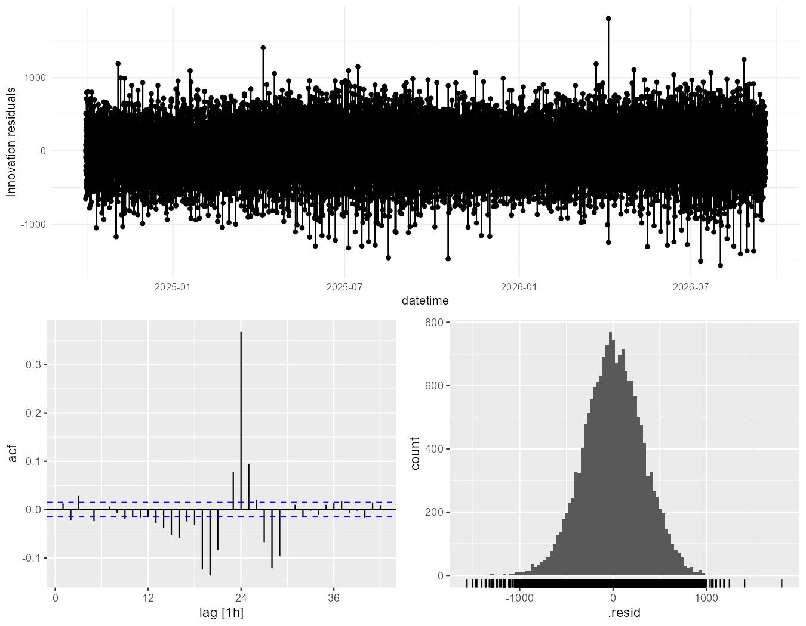
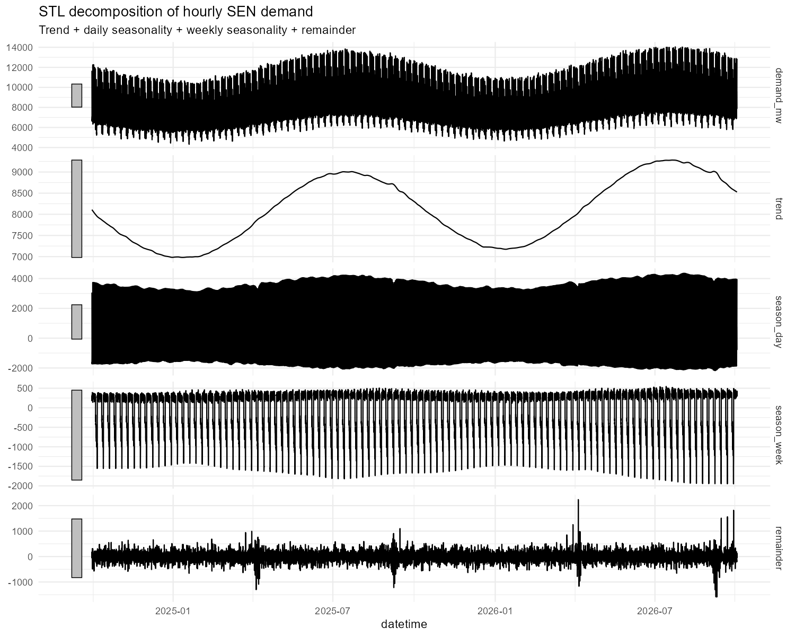
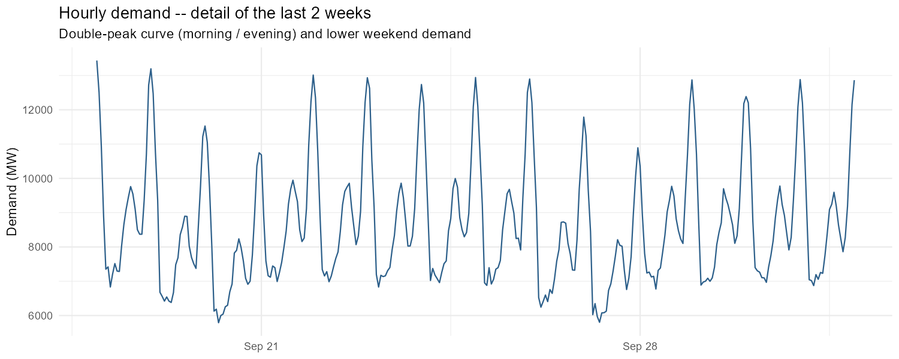
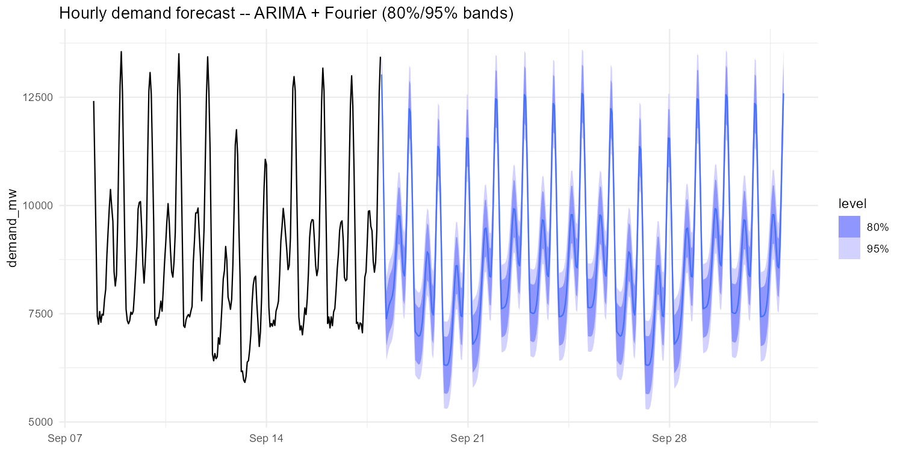

This page shows the project's results. The methodology, the design decisions and the limitations are documented in the repository's README.
7.3 Residual diagnostics -- the lag-24 investigation

How to read it: the three panels are the residual series, its ACF and its distribution. The spike at lag 24 in the middle panel is the whole subject of this section -- it is what survives after the daily Fourier basis is taken to its Nyquist limit. The residuals are otherwise well behaved: centred, roughly symmetric, no trend. That combination is the point. A model can be unbiased and still be leaving structure on the table, and only the ACF shows it.
7.4 Generated figures

The decomposition separates the series into trend, daily season, weekly season and remainder. Two things are worth reading off it. The trend panel shows the annual cycle at a ~2,000 MW amplitude, peaking in winter. And the season_day panel is a *solid black band* — at two years of hourly resolution there are roughly 730 daily cycles on the page, so the individual shape is impossible to see. That is exactly why the next figure exists:

At two weeks the real shape appears: a double peak each weekday (morning and evening) separated by a midday dip, with weekends visibly lower and flatter. The double peak is what makes K=4 insufficient as a daily Fourier basis — four harmonics cannot represent two peaks per cycle plus the asymmetry between them, which is the mechanism behind the lag-24 residual spike that §7.3 is about.

Ten days of training context followed by fourteen days forecast. The model keeps the double-peak shape through the whole horizon. Note the asymmetry of the bands: they are tight around the peaks and much wider around the overnight troughs, so the forecast is considerably less certain about how low demand goes at night than about how high it goes during the day.